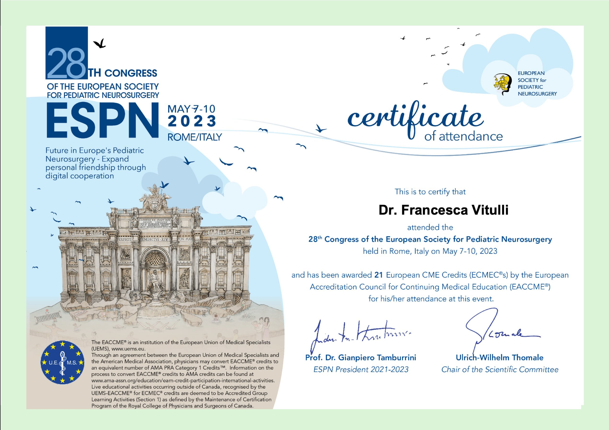
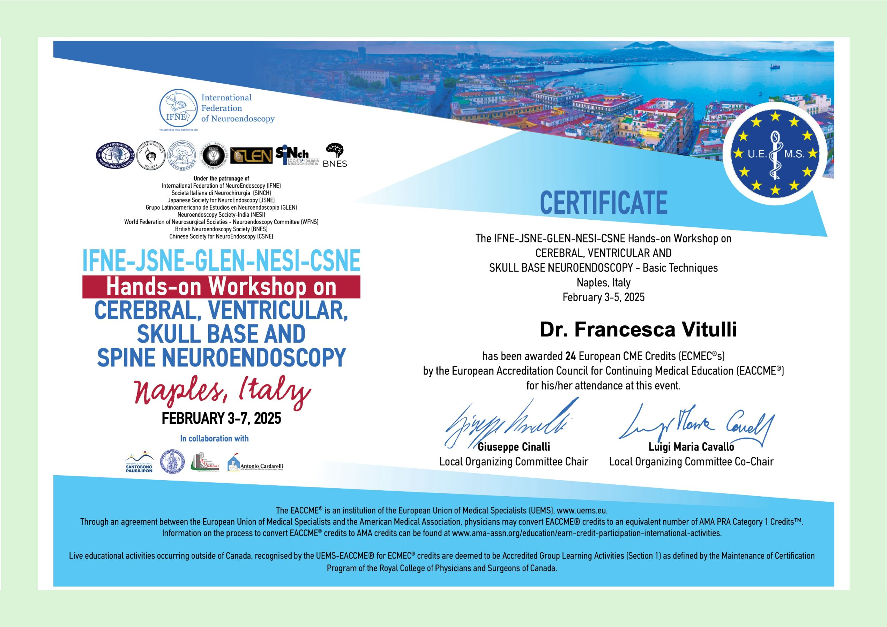
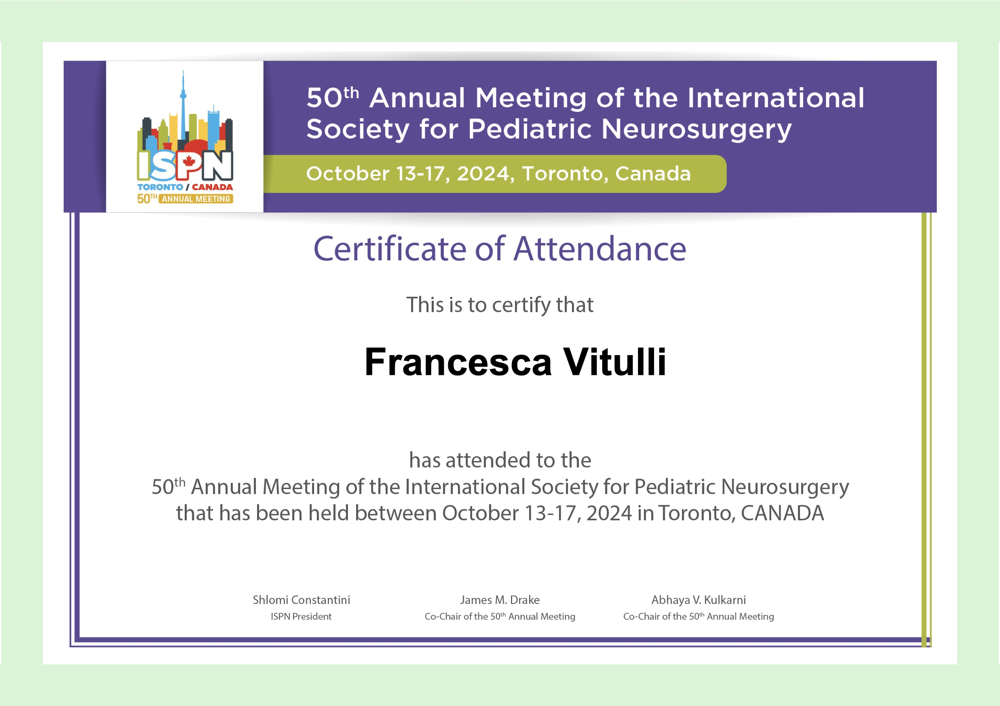
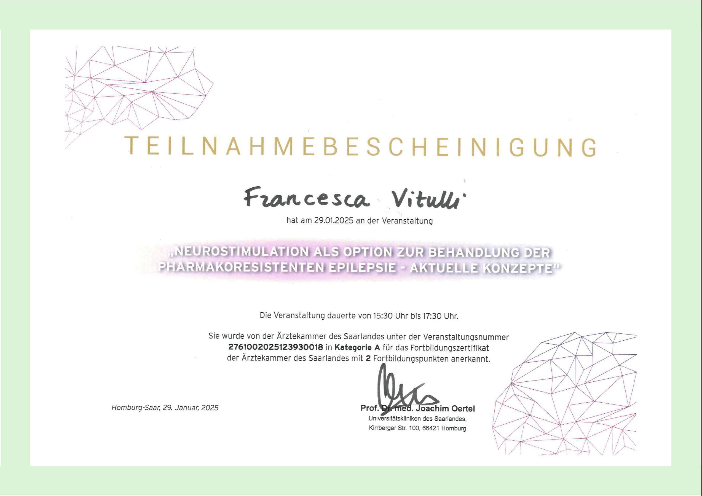
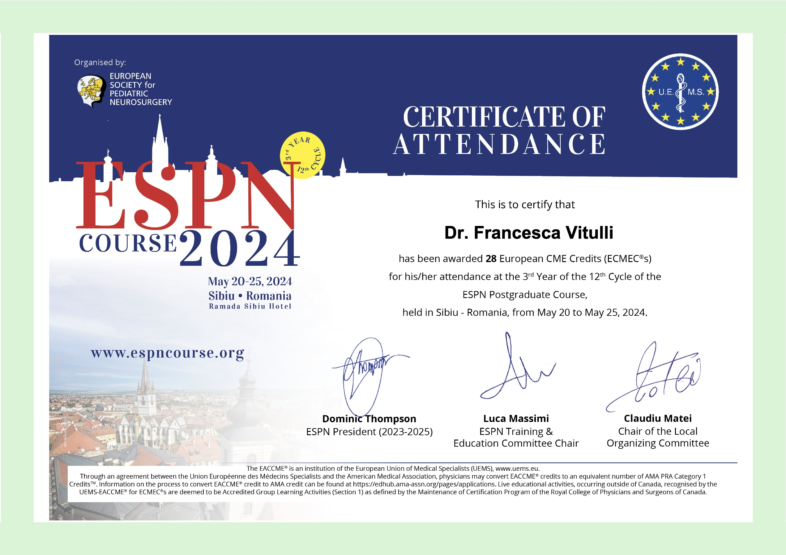
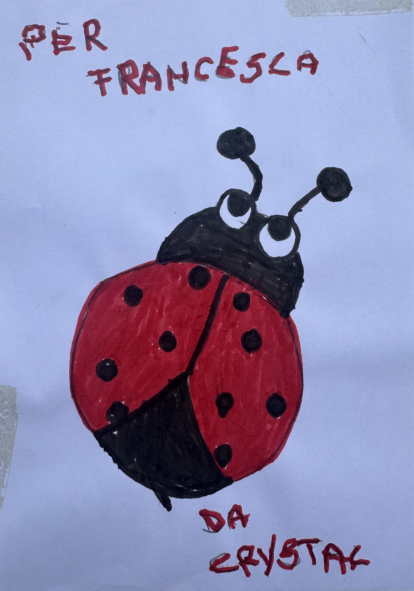
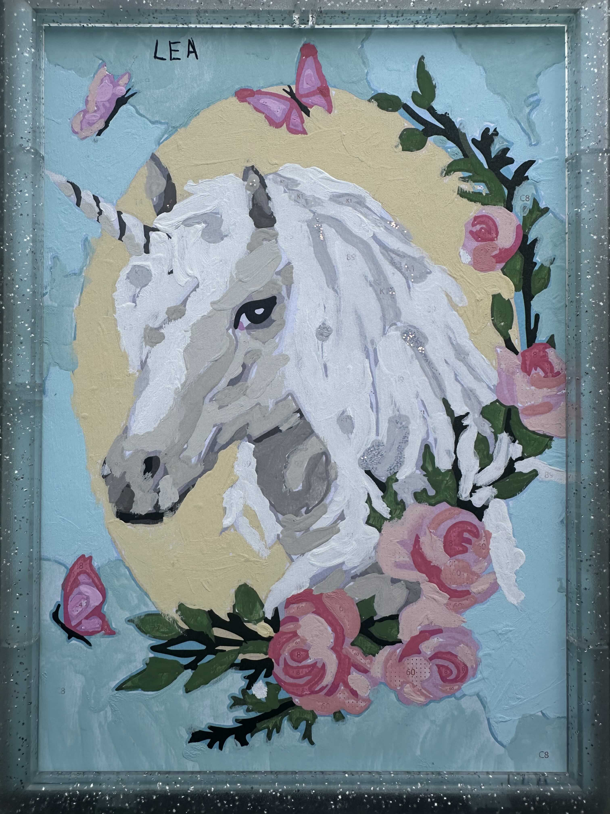
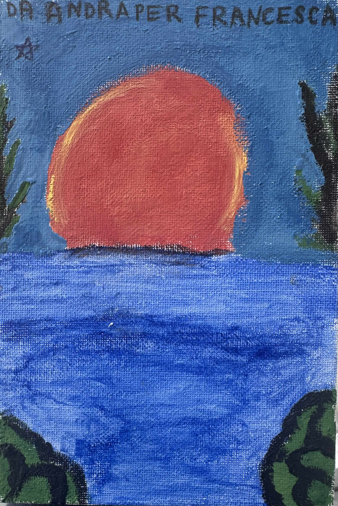
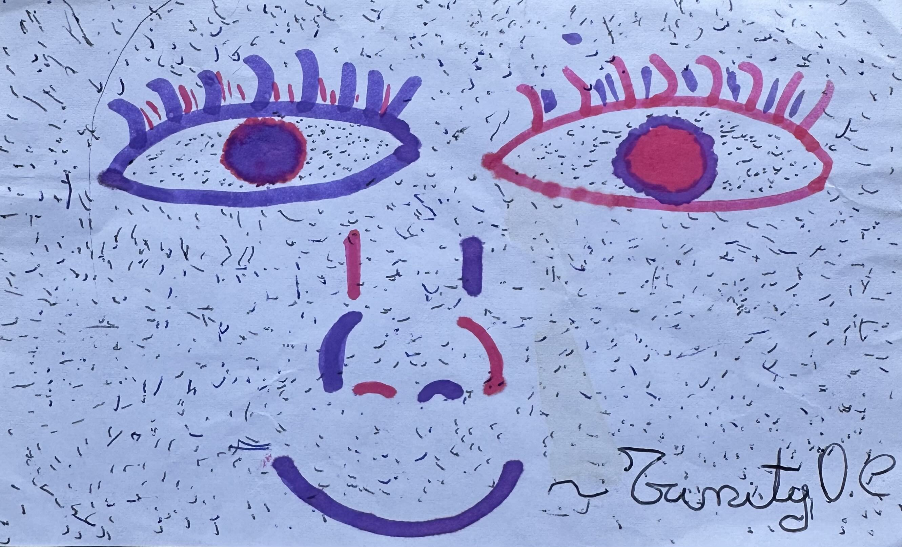

Dott.ssa Francesca Vitulli
Specialista in Neurochirurgia Pediatrica
Specialista in Neurochirurgia Pediatrica
Sono una neurochirurga con formazione in Italia e esperienza internazionale, specializzata in tecniche mini-invasive e chirurgia neuro-oncologica pediatrica. Credo in un approccio umano e multidisciplinare alla cura del paziente.
Mi occupo del trattamento chirurgico delle patologie del sistema nervoso centrale, tra cui tumori cerebrali, idrocefalo, cisti colloidi e altre condizioni neurochirurgiche complesse. Utilizzo tecniche endoscopiche, microchirurgiche e tecnologie avanzate di neuronavigazione e monitoraggio intraoperatorio.
La formazione continua è fondamentale per offrire il meglio ai miei pazienti. Ecco alcuni momenti salienti di congressi e corsi.





I riconoscimenti d'affetto più importanti: le opere d'arte create dai miei pazienti.




Email: f.vitulli@santobonopausilipon.it
Tel: +39 333 700 9837
Sede: Ospedale Santobono - A.O.R.N. Santobono-Pausilipon, Napoli